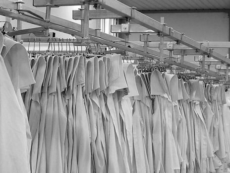

Uma etapa de cada vez.
Separei moldes, corte, costura e acabamentos. Quem procura conhecer a produção pode escolher uma etapa e ler a explicação junto da imagem, sem ter de a localizar num texto corrido.
Uma proposta para a Carizé
Uma página que liga as etapas da produção às imagens que as ajudam a explicar.
Organizei esta demonstração a partir do vosso site. A ideia é dar a quem chega uma forma de conhecer o processo, antes de falar convosco.
Explorar a demonstração
01 / Experimente
Explore as quatro etapas dentro da demonstração. Pode mudar a largura para ver como a página se adapta ao telemóvel.
Vista adaptável à largura disponível. A demonstração tem navegação e seleção de etapas; não envia pedidos.
02 / O que propus
As etapas já estão descritas no vosso site. O que mudei foi a forma de as percorrer.
Separei moldes, corte, costura e acabamentos. Quem procura conhecer a produção pode escolher uma etapa e ler a explicação junto da imagem, sem ter de a localizar num texto corrido.
Usei fotografias que a Carizé já publica, com legendas do que é visível. Num filme novo, mostraria o gesto de quem trabalha e explicaria a sua função: uma máquina parada não mostra, por si só, como é usada.
Depois das etapas, coloquei um exemplo de pedido com tipo de peça, fase do projeto e contexto. A ideia é ajudar uma marca a explicar o que procura. Aqui é apenas uma simulação: nada é enviado.